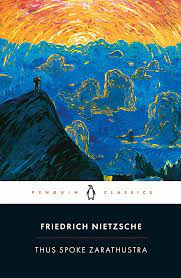

Thus spoke Zarathustra
More Information
See this linkPlot:
Nietzsche was one of the most revolutionary and subversive thinkers in Western philosophy, and Thus Spoke Zarathustra remains his most famous and influential work. It describes how the ancient Persian prophet Zarathustra descends from his solitude in the mountains to tell the world that God is dead and that the Superman, the human embodiment of divinity, is his successor. Nietzsche’s utterance ‘God is dead’, his insistence that the meaning of life is to be found in purely human terms, and his doctrine of the Superman and the will to power were all later seized upon and unrecognisably twisted by, among others, Nazi intellectuals. With blazing intensity and poetic brilliance, Nietzsche argues that the meaning of existence is not to be found in religious pieties or meek submission to authority, but in an all-powerful life force: passionate, chaotic and free.
For more than seventy years, Penguin has been the leading publisher of classic literature in the English-speaking world. With more than 1,700 titles, Penguin Classics represents a global bookshelf of the best works throughout history and across genres and disciplines. Readers trust the series to provide authoritative texts enhanced by introductions and notes by distinguished scholars and contemporary authors, as well as up-to-date translations by award-winning translators.